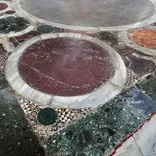
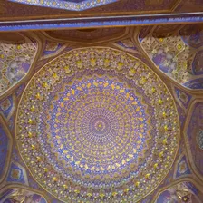
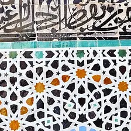
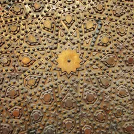
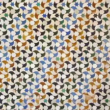
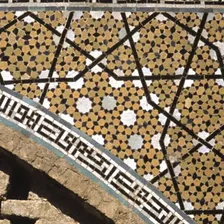

omphalion marblehagia sophia, istanbul

timurid dometilya-kori madrasa, samarkand

fez zelligebou inania madrasa, fez

mamluk doorsultan hassan mosque, cairo

alhambra alicatadothe alhambra, granada

isfahan girihdarb-e imam shrine, isfahan